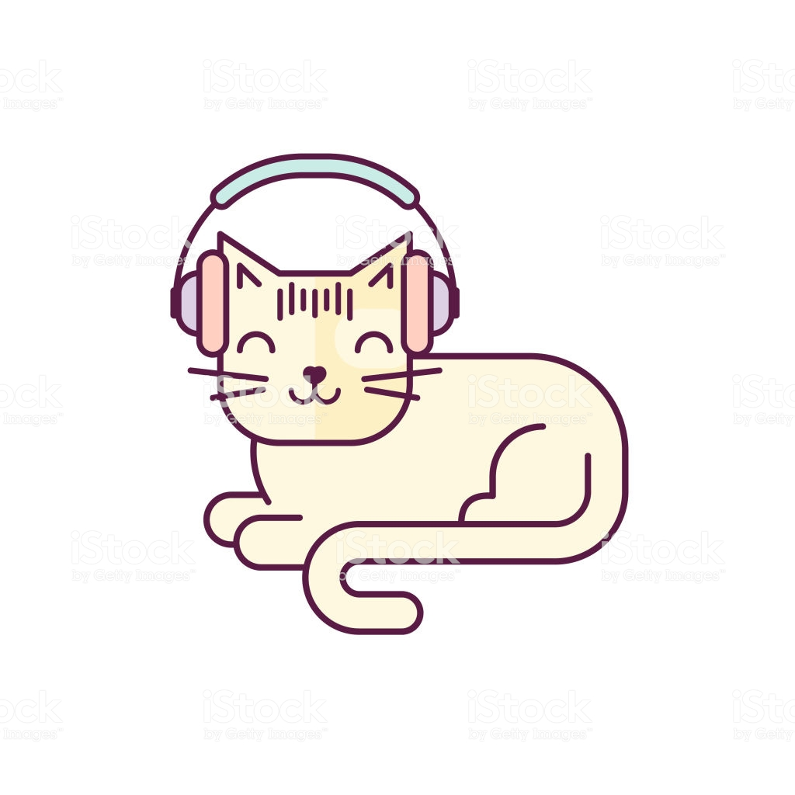
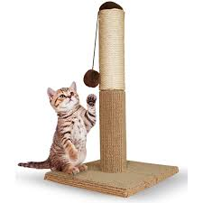
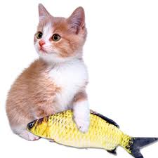
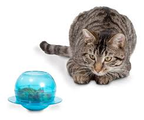

 Juguetes que tenemos para tu gatito
Información de tipos de juguetes
- Rascadores: Los rascadores son uno de los juguetes básicos tanto para gatos adultos como para gatitos. Con un rascador tu gato se mantendrá activo, le ayudará a mantener sus uñas sanas y fuertes, será su lugar especial, su territorio. Además, con un rascador te aseguras que tu mascota no arañe los muebles.

- Presas: Los gatos son cazadores y su instinto felino los empuja a cazar y perseguir cualquier cosa que les llame la atención, recuerda que además de ser un poco vagos, los gatos también son curiosos por naturaleza. Las presas inventadas o juguetes mordedores son perfectos para que tu gatito se distraiga y aprenda a divertirse con juguetes y no con tu mano.

- Caña de pescar: Otro clásico para gatos, la caña de pescar o el pesca-gatos es un juguete ideal para gatos pequeños, aunque los adultos también se lo pasan en grande con este tipo de juegos. Se trata de un hilo con un juguete llamativo en la punta (un ratón, plumas, una pelota) que tendrán que cazar mientras tu lo vas moviendo y escondiendo por toda la casa. Con los juguetes de pesca para gatos podrás interactuar directamente con tu mascota, enseñándole a acechar a sus presas.

- Dispensador de premios: Los dispensadores de premios también son muy populares entre los perros, pero cuando se trata de gatitos este tipo de juguetes son excelentes para que nuestra mascota pase un buen rato entretenida, los estimulará y te servirá para dárselo cuando se quede solo en casa.
Algunos consejos para la hora del juego
- Los gatos son especiales. Aunque creemos que será difícil, si un día tu mascota no quiere jugar no lo tomes como algo personal, a tu gato le sigue gustando jugar y estar contigo. Todos los gatos tienen una personalidad especial y también disfrutan de sus largas siestas y de la compañía de sus dueños en la distancia.
- Varía los juguetes. Ten varios tipos de juguetes y ten diferentes modelos de cada uno; no te preocupes por el dinero, porque hacer juguetes caseros para gatos es muy económico. Los gatos se aburren con facilidad y con un variado abanico de opciones en juegos lo mantendrás siempre activo y feliz.
- Juega con tu mascota. A los gatos, más que jugar en sí, les gusta jugar contigo, así que no te enfoques solo en que se diviertan ellos solos sino dedica un tiempo especial para compartir con ellos. No olvides que también el juego es algo necesario para mantener a tu gato sano y saludable.

Nuestros juguetes
Página principal